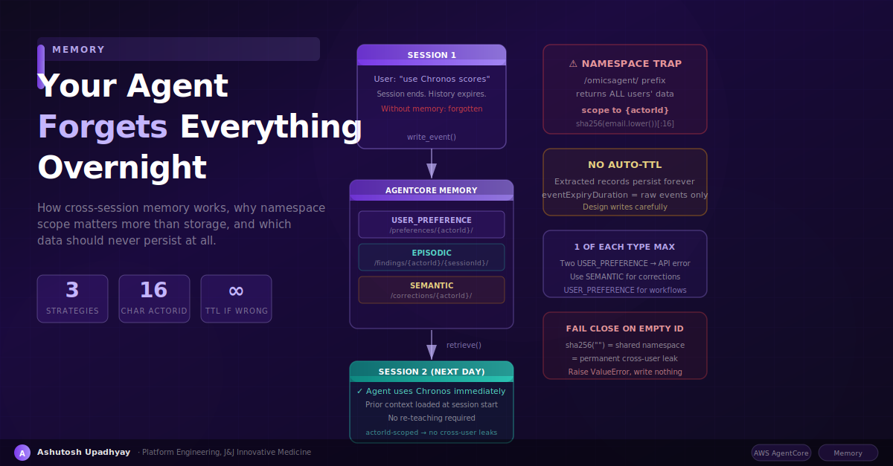

Every session starts cold. Users re-teach the same preferences. Here's how to give your agent real memory — without creating a privacy disaster in the process.
A researcher opened our AI agent on a Tuesday morning and typed a question about gene dependency scores. The agent came back with RNAi-based scores. The researcher sighed, typed the same correction they had typed the previous Thursday: "Use Chronos scores, not RNAi. Chronos is copy-number corrected."
The agent apologized and switched to Chronos. It got the question right. The session ended. On Wednesday morning, the same researcher asked a similar question. The agent came back with RNAi scores again.
This is not an edge case. This is what stateless agents do. Every session begins with a blank slate. Users who interact with an agent daily don't experience it as helpful — they experience it as a tool with amnesia that they have to re-train each morning at the cost of their own time and patience.
We fixed it by implementing cross-session memory using AWS AgentCore. This post covers how we built it, what traps we hit, and — just as importantly — what we deliberately chose not to store.
Most production AI agents are stateless by design. The LLM itself has no memory between calls. Session history is injected into each request as a messages array, and that history lives in a database that expires after N days. When the TTL fires, the context is gone.
This architecture has real advantages: it's simple, it's cheap, and there are no cross-request data dependencies to manage. But it creates a specific kind of user experience that erodes trust over time. Users who use the agent regularly don't get better results over time. The agent never learns that this particular scientist prefers a specific scoring method, always pre-resolves cell lines before joining DepMap data, or has already confirmed that PLK1 is essential in the triple-negative breast cancer cell lines they work with.
The real cost of amnesia: It's not just friction. When a researcher has to correct the same methodological preference for the third time, they start to distrust the agent's answers more broadly. "If it gets this wrong every morning, what else is it quietly getting wrong?" Statelessness doesn't just waste time — it undermines the credibility of every response.
The obvious fix — just give it a longer session history — doesn't work at scale. A session history that extends weeks backwards is expensive in tokens, and more importantly, it's full of noise. Old tool results, exploratory queries that went nowhere, hallucinations that were corrected. You don't want any of that injected into every new session.
What you want is the distilled signal: preferences, corrections, confirmed findings. Not a transcript — a profile.
AWS AgentCore Memory is a managed service that runs extraction strategies asynchronously in the background. The architecture has two components: raw events and extracted records.
You write events to the memory store after each query. An event is a conversational exchange: the user's query and the agent's response. The service runs your configured strategies against these events asynchronously — AWS documents this as "a minute or more," though in practice USER_PREFERENCE records often appear in around 25 seconds. EPISODIC reflections may take longer since the service waits to detect a completed episode before generating them. The strategies extract structured records from the raw text: preferences, findings, factual corrections. Those extracted records are what you retrieve at the start of each new session.
The key insight: You're not storing conversation history. You're storing extracted knowledge. The extraction step is what separates "agent memory" from "a very long session log."
The payload format has a few non-obvious requirements that aren't clearly documented. The field name is conversational — not conversationalMessage, not message. And the content inside it must be a dict, not a list.
# Correct payload format
payload = [{
"conversational": {
"role": "USER",
"content": {"text": "query text here"}
}
}]
# create_event also requires an explicit event-timestamp
import datetime
event_ts = datetime.datetime.now(datetime.timezone.utc).strftime("%Y-%m-%dT%H:%M:%SZ")
client.create_event(
memoryId=MEMORY_ID,
actorId=actor_id, # sha256(email.lower())[:16]
sessionId=session_id,
eventTimestamp=event_ts,
payload=payload
)The --event-timestamp parameter is required — omitting it causes an error. And the template variables for namespace configuration are {actorId}, {sessionId}, and {memoryStrategyId}. Not {userId}. Using {userId} causes a silent failure where the template is treated as a literal string.
AgentCore Memory supports five strategy types, but three are most useful for production agent deployments:
| Strategy | What it extracts | Extracted structure | Best for |
|---|---|---|---|
| USER_PREFERENCE | Workflow preferences expressed by the user | {"preference": "...", "context": "...", "categories": [...]} |
Methodological corrections: scoring choices, tool sequencing, output format preferences |
| EPISODIC | Reflection records derived from completed episodes — each reflection distills recurring patterns across sessions into a reusable insight | {"title": "...", "hints": "...", "use_cases": [...], "confidence": ...} |
Research findings a user has confirmed: "we established PLK1 as a dependency target in TNBC". Note: extraction waits until AWS detects a completed episode; extraction latency is longer than USER_PREFERENCE. |
| SEMANTIC | Factual domain knowledge and correction rules | {"fact": "...", "summary": "..."} |
Factual corrections: data model rules, identifier format requirements |
There is a critical constraint: you can only have one strategy of each type per memory resource. If you try to create two USER_PREFERENCE strategies, the API returns an error. This seems obvious in retrospect, but it's not prominently documented. The implication: you cannot have separate "preferences" and "corrections" strategies both typed as USER_PREFERENCE. You need to use SEMANTIC for corrections and USER_PREFERENCE for workflow preferences.
Each strategy writes to a namespace path derived from template variables. Use namespaceTemplates in the strategy configuration — not namespaces. The path structure should scope to {actorId}:
# Good: one namespaceTemplate per strategy (each strategy is a separate object)
# USER_PREFERENCE strategy:
namespaceTemplates: ["/omicsagent/preferences/{actorId}/"]
# SEMANTIC strategy (corrections):
namespaceTemplates: ["/omicsagent/corrections/{actorId}/"]
# EPISODIC strategy (findings/reflections):
namespaceTemplates: ["/omicsagent/findings/{actorId}/{sessionId}/"]
# Bad: multiple templates in one strategy — API only accepts 1 template per strategy
# Also bad: global namespace — returns ALL users' data on retrieve
namespaceTemplates: ["/omicsagent/"]The extracted content comes back as a JSON string inside content.text, not plain text. Your retrieval code needs to json.loads() the content to access the structured fields. If you try to surface it directly as text, you'll inject raw JSON into the agent's context which it will attempt to parse itself, with unpredictable results.
This one deserves its own section because the failure mode is permanent and silent.
When you retrieve memories, you pass a namespacePath prefix. AgentCore returns all records whose namespace starts with that prefix. If you pass /omicsagent/, you get records from every user who has ever interacted with the system. Researcher A's preferences show up in Researcher B's session context. This is not a hypothetical — we verified it against the live service before shipping.
The permanent leak risk: Extracted long-term records have no automatic TTL. The eventExpiryDuration setting governs only the raw event records, not what the strategies extract. A preference or correction record written with the wrong namespace scope will remain there indefinitely unless you explicitly delete it via DeleteMemoryRecord.
Never store the raw user email as the actorId. Instead, hash it:
import hashlib
def _hash_actor(email: str) -> str:
# Fail close on empty/fallback identity
if not email or email.strip().lower() in ("", "anon", "anonymous"):
raise ValueError(
f"Cannot derive actorId from empty/fallback email: {email!r}"
)
return hashlib.sha256(email.strip().lower().encode()).hexdigest()[:16]The fail-close on empty identity is important. If your auth layer fails to inject a user email and your code falls back to an empty string or "anon", the SHA-256 of that string becomes a shared actorId for every unauthenticated request. Every preference and finding gets written to the same namespace. Every user gets every other user's context. And since extracted records have no TTL, this contamination persists until manually cleaned up.
Raising an exception on empty identity is the correct behavior. Write no memory rather than write to a shared namespace.
Writing events after every query is one half of the memory system. The other half is capturing explicit corrections from user feedback.
In our system, users can give thumbs-up or thumbs-down ratings on agent responses, and optionally leave a comment. We route negative feedback with substantive comments to the SEMANTIC corrections namespace:
# Only write corrections on explicit thumbs-down with a real comment
if rating == -1 and comment and len(comment.strip()) > 20:
background_tasks.add_task(
write_correction,
actor_id=actor_id,
session_id=session_id,
content=comment.strip()
)
# Only write preferences on thumbs-up with comment
elif rating == 1 and comment:
background_tasks.add_task(
write_preference,
actor_id=actor_id,
session_id=session_id,
content=comment.strip()
)This sounds simple. Before enabling the write path, we queried the feedback table to understand the baseline signal. What we found stopped us.
The AND condition in our write path — rating = -1 AND comment IS NOT NULL — had never been true once. 413 rows in the feedback table. 2 rows with rating = -1. 3 rows with a comment. Zero rows with both. The write path was unreachable, not broken.
The problem was in the feedback UI. When a user clicked 👎, the feedback bar immediately collapsed to a "Thanks for your feedback!" message. The comment box — which was inside the now-collapsed bar — was gone. Users couldn't add a comment after clicking thumbs-down. They had to click the comment button first, then click thumbs-down, in a non-obvious sequence that nobody discovered.
The fix was three lines of JavaScript: on thumbs-down, instead of collapsing the bar, auto-open the comment input and keep the bar visible. Only collapse after the comment is submitted. The entire corrections pipeline was gated on this UI state flag.
Lesson: Test the full feedback pipeline end-to-end against your production data before concluding it works. Checking that the write code is correct is not the same as checking that the write path is reachable. Query your actual table for co-occurring rating = -1 AND comment IS NOT NULL rows. If you find zero, the problem is probably in your UI.
The temptation when building agent memory is to store everything. Tool results, intermediate calculations, data the agent retrieved, every conversation turn. Don't.
Three rules we apply:
What belongs in memory: workflow corrections ("always use Chronos, not RNAi"), confirmed scientific findings ("PLK1 is a dependency in TNBC for this lab's work"), identifier format preferences ("use ProteinIds not GeneNames for bare identifiers"). What does not: specific numbers, intermediate results, exploratory queries that went nowhere.
The retrieval happens at session start, before the first user message. You inject the retrieved memories as synthetic conversational turns early in the messages array:
# Retrieve BEFORE extending the messages array with session history
# Returns a formatted string (not a list) — use directly in the text field
_memory_context: str | None = get_session_memory_context(actor_id=actor_id, query=user_query)
# Prepend as synthetic turns — content must be a list (Bedrock Converse format)
if _memory_context:
prepend = [
{
"role": "user",
"content": [{"text": f"Prior context from past sessions:\n{_memory_context}"}]
},
{
"role": "assistant",
"content": [{"text": "Prior context loaded."}]
}
]
messages = prepend + _load_messages_from_history(history)
else:
messages = _load_messages_from_history(history)
# IMPORTANT: capture prior_message_count AFTER the prepend
prior_message_count = len(messages)The ordering matters. If you insert the prepend after computing prior_message_count, those synthetic turns get counted in the delta slice and persisted to your session store. On the next request, they're loaded as history and injected again. Each session doubles the injected context. After ten sessions, the messages array contains twenty copies of the same prior context block.
We verified the round-trip end-to-end using a synthetic event: write an event, wait, retrieve — the extracted USER_PREFERENCE record appeared correctly structured in the actor-scoped namespace in about 25 seconds. The infrastructure is in place; we're watching for the first real user-generated records to accumulate once the UI fix ships.
Even before extraction data accumulates, the session-init context injection changes how the agent handles mid-session corrections. Simply having the agent instructions say "if you see prior context at the start of this session, treat it as established fact about this user's preferences" makes the agent acknowledge and apply corrections more consistently within the current session.
The longer-term loop — corrections accumulating, being surfaced at the next session start, changing the agent's behavior permanently for that user — is enabled and we're watching for the first real records to flow through. The next layer is the cluster-level pattern: when three or more users make the same correction, that's a signal the agent's default behavior needs to change for everyone, not just those individuals. That's a skill update, not a memory write. The two mechanisms serve different scopes.
namespacePath prefix must be scoped to {actorId}; a global prefix returns all users' data and constitutes a privacy violation.actorId should be a hash of the user's email, never the raw email. Fail close on empty identity — never hash an empty string.prior_message_count, or the synthetic turns accumulate across sessions.